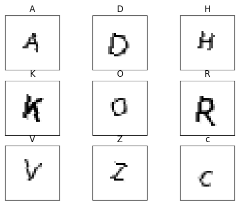

Translate
What?
I had the idea to try and see which non-English letters looked most like each of the letters in the English alphabet. This is excluding letters like É, because well, obviously, that looks like an English letter!
This then expanded to use other Unicode characters that seemed interesting, like Mathematical Operators and Dingbats as well.
How?
I thought the easiest way to achieve this was to have a neural network be able to predict which English letter an image of a letter was. Then once I had the model, I could get it to predict characters that the model had not seen, and the model would estimate which English letter it looked most like.
Getting the dataset
The first thing I needed was the image dataset. I created 28x28 pixel black-and-white images of the English characters, including separating the uppercase and lowercase characters. I used some simple techniques to increase the variability in the dataset, including using different fonts, varying font sizes and applying rotations. This generated a dataset of 90,272 images.

Getting the model
First, I tried to get a model which would take a character and try and predict which of the 52 English letters (26 uppercase and 26 lowercase) was closest. This did not work, as there was no way for a letter to not look like an English letter. What this meant in reality was lots of false positives, because the model had to say it looked like something!
My next attempt was to generate 52 different models, one for each English letter. Each model would only have 1 question to answer, does the symbol look like my specific English letter or not? This worked much better, though having 52 models was a bit cumbersome.
Getting the results
Now that I have the model, it was time to test the models against symbols they had not seen before. I got a list of Unicode characters and looped over them, creating a 28x28 pixel black-and-white image of the character and running it through the 52 models. This took a while to run, but generated a list of results that had a very good rate of true positives, but also a bad rate of false positives. What this means is, if a unicode character did look like an English letter, my code was pretty good at finding it. It also had a habit of adding gibberish as well.
All this meant was that I had to do a little manual pruning of the data to make it seem less insane.
Looking at the results, I think I would class it as a success. It does seem like the worst font created in history though.
Why?
I like trying to solve problems that I come up with!